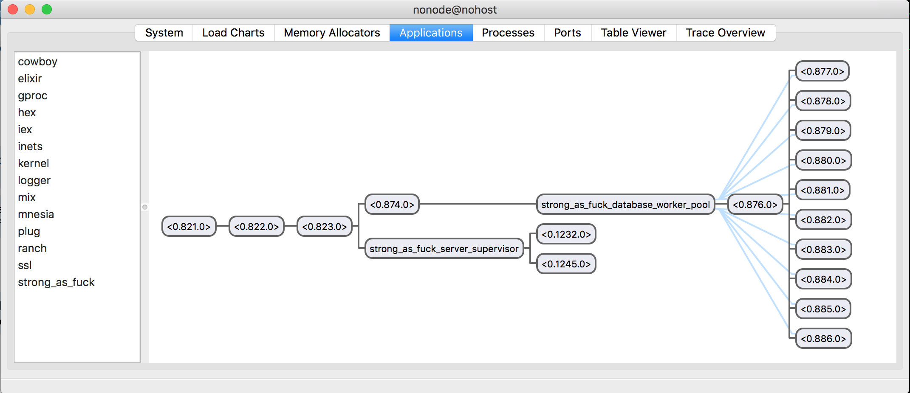

Intro
In part 1, we have used the basic concurrency primitives, processes, to build our naive weightlifting tracking server. And in this part 2, we are going to use OTP framework provided by Erlang to build a more reliable system with simpler codes. And we will also add a web server to our system to let other call our system through http request.
Project Setup
Repo is here. To see the source code:
git clone git@github.com:bruteforcecat/strong-as-fuck.git
cd strong-as-fuck
git checkout v0.0.2Application
An application in a component that can be started and stopped as a unit. In our weightlifting tracking application, we will have server supervisors, database supervisors and web server. By using application, we could easily start and stop entire system.
# mix.ex
defmodule StrongAsFuck.Mixfile do
use Mix.Project
# ...
def application do
[
extra_applications: [:logger, :poolboy],
mod: {StrongAsFuck.Application, []}
]
end
end
# lib/strong_as_fuck/application.ex
defmodule StrongAsFuck.Application do
use Application
def start(_type, _args) do
response = StrongAsFuck.Supervisor.start_link
StrongAsFuck.Web.start_server
response
end
endmod: {StrongAsFuck.Application, []} specific that StrongAsFuck.Application will be our application callback module which means StrongAsFuck.Application will start our application supervision tree. And we will start our application supervisor and web server there.
Web Server
Instead of using the hottest web framework Phoenix, we would use a much lighter web framework called Cowboy(which is actually used in Phoenix) together with Plug which is like Rack in Ruby, providing a specification of composable module for writing web application.
defmodule StrongAsFuck.Web do
use Plug.Router
plug :match
plug :dispatch
def start_server do
Plug.Adapters.Cowboy.http(__MODULE__, nil, port: 4000)
end
get "/training_log_books/:username" do
conn
|> Plug.Conn.fetch_query_params
|> fetch_notebook
|> respond
end
post "/training_log_books/:username/training_logs" do
conn
|> Plug.Conn.fetch_query_params
|> add_training_log
|> respond
end
# ...
defp respond(conn) do
conn
|> Plug.Conn.put_resp_content_type("application/json")
|> Plug.Conn.send_resp(200, conn.assigns[:response])
end
endThe only function exposed in StrongAsFuck.Web is start_server. You can see plug doesn’t provide http server instead it is adapter for different web servers and here we use Cowboy.
We use Plug.Router which give us marco like get and post so we can match incoming request and perform desired action. The specification is that we will have a connection which is just a Struct in elixir and return a new connection with response field populated.
OTP
Generic Server
Previously in part 1, we used recursive function call loop to keep server process alive and have to pass self() and call receive in order to wait for message sent back to caller process.
In OTP, we have GenServer behavior you can think of its an abstraction of the common client-server interaction. To use this, we will call use GenServer macro and implement required callbacks which are &init/1 which will return initial state and allow us to run some initialization work, &handle_call/3 and GenServer.cast for handling synchronous GenServer.call and asynchronous GenServer.cast.
defmodule StrongAsFuck.Server do
use GenServer
alias StrongAsFuck.TrainingLogBook, as: TrainingLogBook
def start_link(username) do
IO.puts "Starting #{__MODULE__} from #{username}"
GenServer.start_link(
StrongAsFuck.Server,
username,
name: via_tuple(username)
)
end
# ...
def init(username) do
{:ok, {username, get_initial_state(username)}}
end
def handle_call(
{:add_training_log, new_training_log},
_,
{username, trainig_log_book}
) do
case StrongAsFuck.TrainingLogBook.add_log(trainig_log_book, new_training_log) do
{:ok, new_training_log_book} ->
StrongAsFuck.Database.insert(username, new_training_log_book)
{:reply, :ok, {username, new_training_log_book}}
{:error, err_msg} ->
{:reply, {:error, err_msg}, {username, trainig_log_book}}
end
end
def handle_call(
{:get_notebook},
_,
{username, trainig_log_book}
) do
case StrongAsFuck.Database.get(username) do
nil ->
{:reply, {:error, "no training log book with username: #{username}"}, {username, trainig_log_book}}
new_training_log_book ->
{:reply, {:ok, new_training_log_book}, {username, new_training_log_book}}
end
end
# ...The difference between the GenServer.call and GenServer.cast is that GenServer.call will block the caller process until the function handle_call return while GenServer.cast is basically fire and forget.
Supervisor
In order to make our system more responsive, we want to have a separate server process concurrently for each user training log book so no user process will be blocked by others. But what if one process crash?
Instead of writing lots of defensive code like try catch block, we will need another process called supervisor to monitor the rest of the children(worker) processes. When a worker termintes, the supervisor will start another one and replace it.
defmodule StrongAsFuck.ServerSupervisor do
use Supervisor
def start_link do
Supervisor.start_link(__MODULE__, nil, name: :strong_as_fuck_server_supervisor)
end
def start_child(username) do
Supervisor.start_child(:strong_as_fuck_server_supervisor, [username])
end
def init(_args) do
children = [
worker(StrongAsFuck.Server, [])
]
supervise(children, strategy: :simple_one_for_one)
end
endAnd we will use simple_one_for_one strategy because all child process are dynamically created.
Process Registry
defmodule StrongAsFuck.Cache do
def server_process(username) do
case StrongAsFuck.Server.whereis(username) do
:undefined ->
create_server(username)
pid ->
pid
end
end
defp create_server(username) do
case StrongAsFuck.ServerSupervisor.start_child(username) do
{:ok, pid} -> pid
{:error, {:already_started, pid}} -> pid
end
end
endBut how do we know which server process to use for any given user. To solve this, we will need process registry which basically persist mapping of pid to username. Here, we use gproc as the process registry library. The logic is very simple. If we find an existing process by username, we will return the pid of that process. If no, we will create a new StrongAsFuck.Server process and return the pid.
Database
We will use mnesia for our database due to its simplicity. For database, we want to have a pool of fixed number of workers which will be supervised by StrongAsFuck.Database. The simple implementation of pooling is starting worker process and forward request to worker based on some routing logic. Here we will use poolboy. By providing pool name in :poolboy.transaction, and we will have the available worker pid in our callback function.
# lib/strong_as_fuck/database_supervisor.ex
defmodule StrongAsFuck.DatabaseSupervisor do
def start_link(pool_size) do
children = [
:poolboy.child_spec(:worker, poolboy_config(pool_size), [])
]
Supervisor.start_link(children, strategy: :one_for_one)
end
defp poolboy_config(pool_size) do
[
{:name, {:local, pool_name()}},
{:worker_module, StrongAsFuck.DatabaseWorker},
{:size, pool_size},
{:max_overflow, 2}
]
end
def pool_name(), do: :strong_as_fuck_database_worker_pool
end
# lib/strong_as_fuck/database.ex
defmodule StrongAsFuck.Database do
# ...
def start_link() do
# ...
:mnesia.start
DatabaseSupervisor.start_link(@pool_size)
end
def insert(key, data) do
:poolboy.transaction(
DatabaseSupervisor.pool_name(),
fn(pid) ->
GenServer.call(pid, {:insert, key, data})
end,
@worker_timeout
)
end
def get(key) do
:poolboy.transaction(
DatabaseSupervisor.pool_name(),
fn(pid) ->
GenServer.call(pid, {:get, key})
end,
@worker_timeout
)
end
endPlay with it in Iex
iex -S mix
# another shell
curl -d '' 'http://localhost:4000/training_log_books/alice/training_logs?movement_name=snatch&rep=10&weight=100'
# OK
curl http://localhost:4000/training_log_books/alice
# {"username":"alice","logs":[{"weight":"100","rep":"10","movement_name":"snatch"}]}%We can easily application process tree by :observer.start in iex. 
Now our weightlifting tracking server can be accessed through http interface and we have use OTP to make sure our system is responsive and fault-tolerated. The next part will be using Phoenix web framework and implement more feature!